请访问原文链接：在 macOS 上运行无限许可的 Nessus 10 查看最新版。原创作品，转载请保留出处。
生活本不易，原创更不易。还请友商高抬贵手，尊重彼此的劳动成果。谢谢🙏
作者主页：sysin.org
1. 下载
下载 macOS：https://sysin.org/blog/macos/
下载 Nessus：https://sysin.org/blog/nessus-10/
下载插件：https://sysin.org/blog/nessus-10/
官网下载插件（需要注册）：Nessus offline Page
2. 安装
下载的 dmg 文件打开后是一个 pkg 安装包，双击直接下一步即可。
也可以使用命令完成安装：
1 | sudo hdiutil attach Nessus-<Nessus_Version>.dmg |
3. 初始化登录
（1）启动服务
默认已经启动并且自动启动，在 “ -> 系统偏好设置…” 中点击 Nessus 图标，可以停止和启动服务以及设置是否自动启动。
或者使用以下命令：
- 启动服务：
sudo launchctl load -w /Library/LaunchDaemons/com.tenablesecurity.nessusd.plist - 停止服务：
sudo launchctl unload -w /Library/LaunchDaemons/com.tenablesecurity.nessusd.plist
（2）使用浏览器访问：https://<IP-or-FQDN>:8834，注意忽略证书警告
（3）选择 “Managed Scanner”
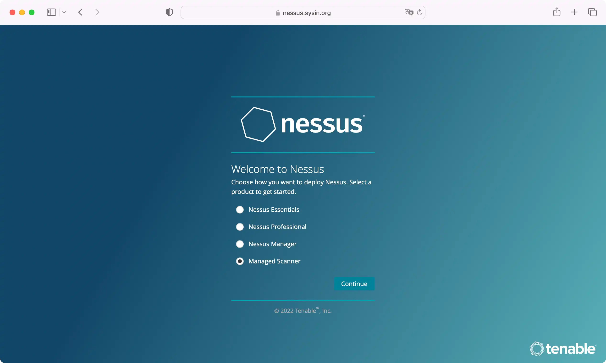
（4）选择 Tenable.sc
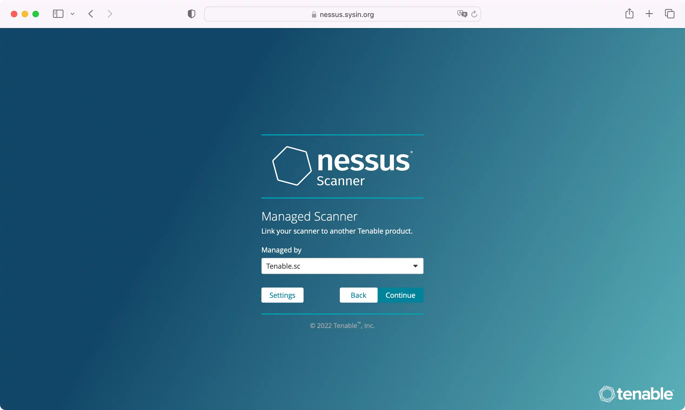
（5）创建管理员账号和密码
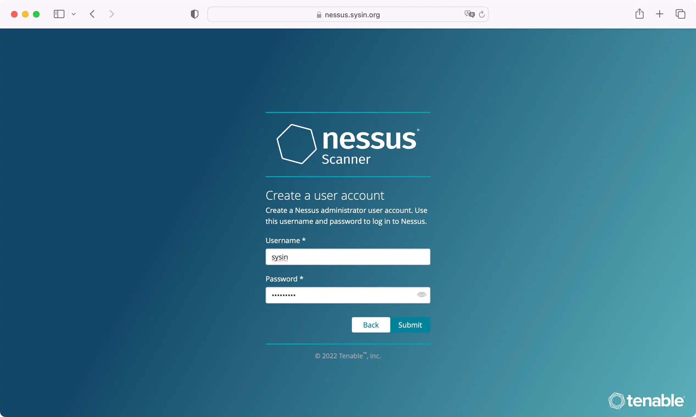
（6）编译插件（新安装编译过程很快）
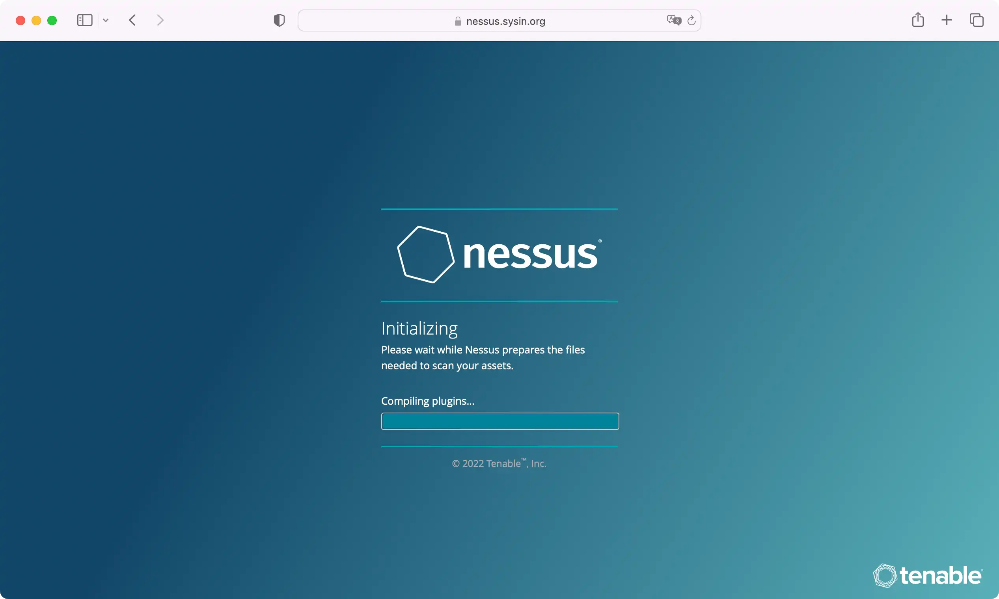
（7）自动登录，安装成功
此时只有 “Setting”（没有 “Scans”）且显示未注册。
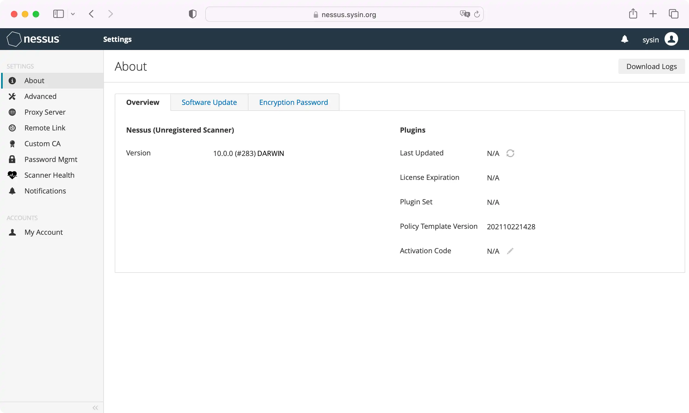
4. 安装插件和创建配置文件
此时下面两个配置文件都是空白的
1 | /Library/Nessus/run/var/nessus/plugin_feed_info.inc |
（1）更新插件
1 | sudo /Library/Nessus/run/sbin/nessuscli update all-2.0.tar.gz |
（2）写入配置文件
编辑 plugin_feed_info.inc 文件：
1 | sudo vi /Library/Nessus/run/var/nessus/plugin_feed_info.inc |
写入以下内容：
1 | PLUGIN_SET = "202111052001"; |
上述 PLUGIN_SET 后的数字（日期）并没有严格要求，根据日期来写以便识别版本（安装插件时会显示版本号）。
5. 重启服务编译插件
（1）停止服务
1 | sudo launchctl unload -w /Library/LaunchDaemons/com.tenablesecurity.nessusd.plist |
（2）启动服务
1 | sudo launchctl load -w /Library/LaunchDaemons/com.tenablesecurity.nessusd.plist |
（3）返回浏览器查看状态
此时 Web 页面提示：Establishing connection, please wait…
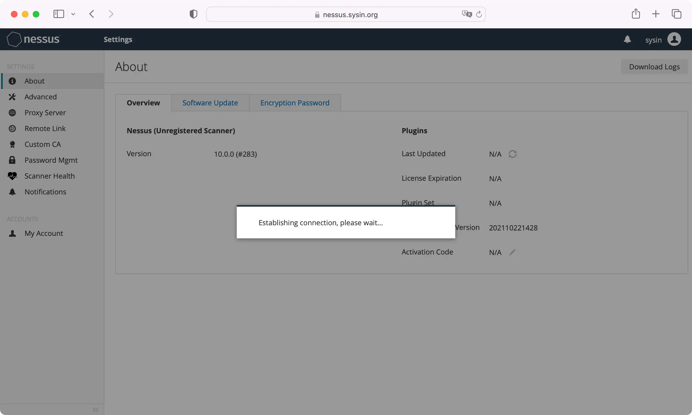
刷新一下浏览器，可以看到正在：Compiling plugins…
此过程持续时间稍微有点长，应与机器性能有关。
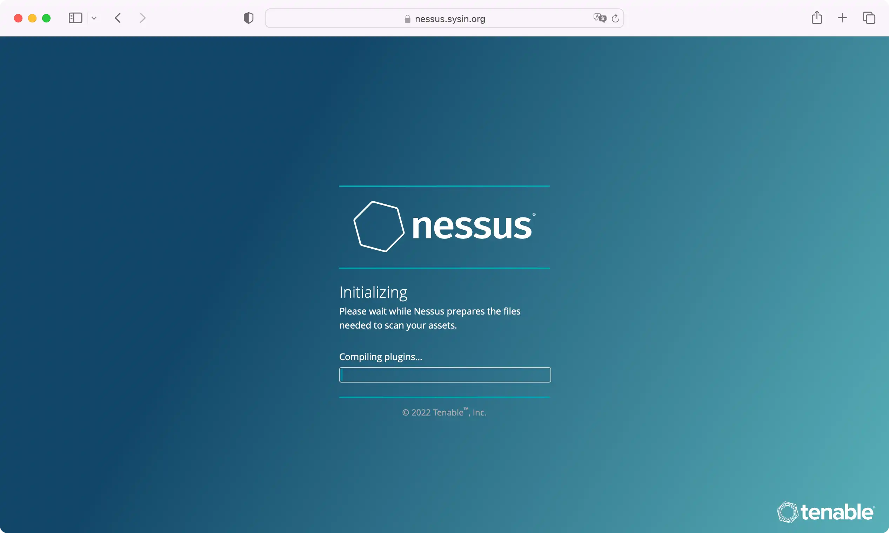
（4）出现登录页面
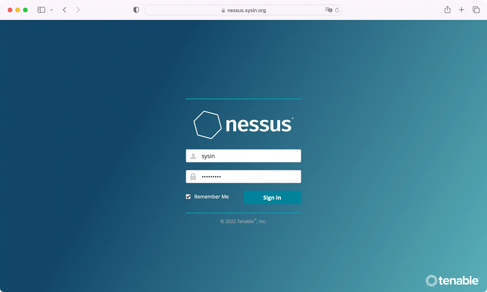
（5）登录后自动打开 About 页面（ Settings - About）
可以看到 “Licensed Hosts Unlimited” 和 “Plugin Set” 的版本。
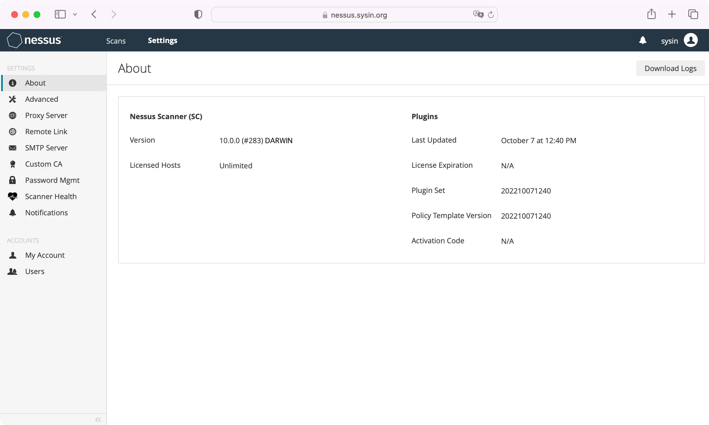
已经成功。
6. 验证
（1）点击 “Scans” - “My Scans”，“Create a new scan”
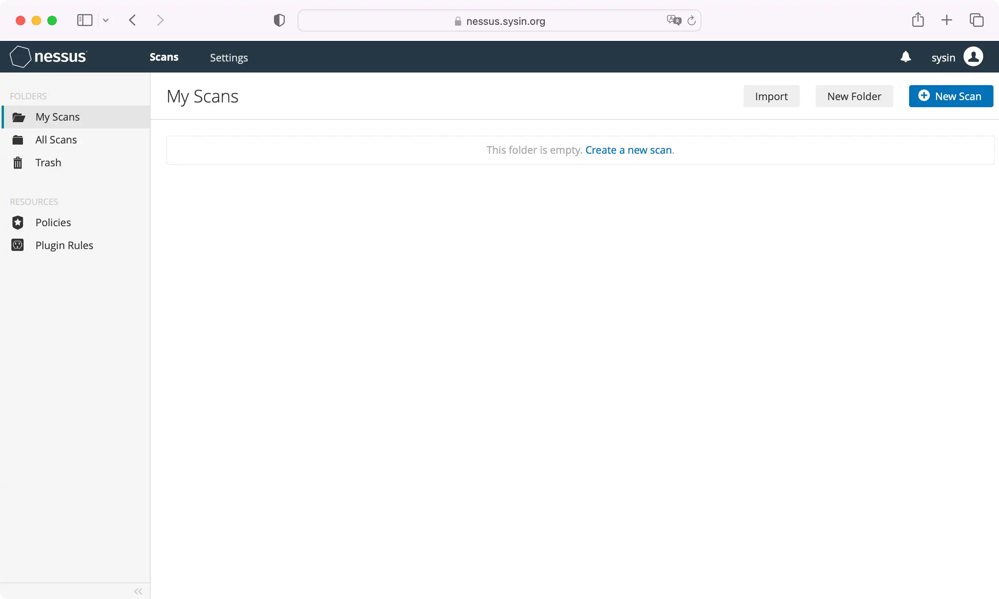
（2）可以看到模板都出来了
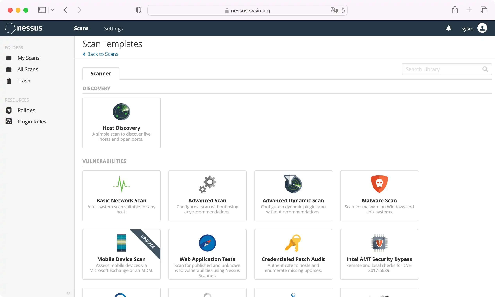
（3）点击 Advanced Scan，可以看到插件数量
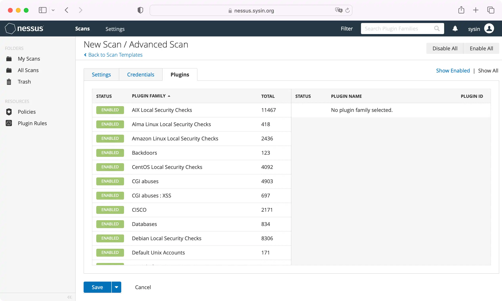
创建一个 Scan 试试吧。
7. 如何更新插件
（1）下载新版插件离线包
（2）更新命令：sudo /Library/Nessus/run/sbin/nessuscli update all-2.0.tar.gz
（3）验证配置文件（修改版本日期）
（4）重启服务并验证
⚠️ 警告：该方法仅限临时测试和学习使用，重启后失效，可以将插件设置为只读继续有效，商业用途请购买许可。
发布 Nessus 试用版自动化安装程序，支持 macOS Tahoe、RHEL 10、Ubuntu 24.04 和 Windows
- Nessus 10.12 Auto Installer for macOS Tahoe - Nessus 自动化安装程序 (updated Aug 2026)
- Nessus 10.12 Auto Installer for RHEL 9 | RHEL 10 - Nessus 自动化安装程序 (updated Aug 2026)
- Nessus 10.12 Auto Installer for Ubuntu 24.04 - Nessus 自动化安装程序 (updated Aug 2026)
- Nessus 10.12 Auto Installer for Windows - Nessus 自动化安装程序 (updated Aug 2026)
Nessus 10 系列版本下载
更多：HTTP 协议与安全

文章用于推荐和分享优秀的软件产品及其相关技术，所有软件提供免费版或试用版。内容若侵犯了您的版权，请联系作者删除。如果您喜欢这篇文章，或者觉得它对您有所帮助，亦或发现有不当之处；欢迎发表评论，也欢迎分享这个网站，或者赞赏一下，谢谢！提示：捐赠或赞赏属于自愿赠予行为，提交后即表示您对作者的支持与认可。为避免误操作，请在确认前仔细检查金额，支付完成后将无法撤销或退还。
 支付宝赞赏
支付宝赞赏  微信赞赏
微信赞赏赞赏一下
敬请注册！点击 “登录” - “用户注册”（已知不支持 21.cn/189.cn 邮箱）。 请勿使用联合登录（已关闭）。